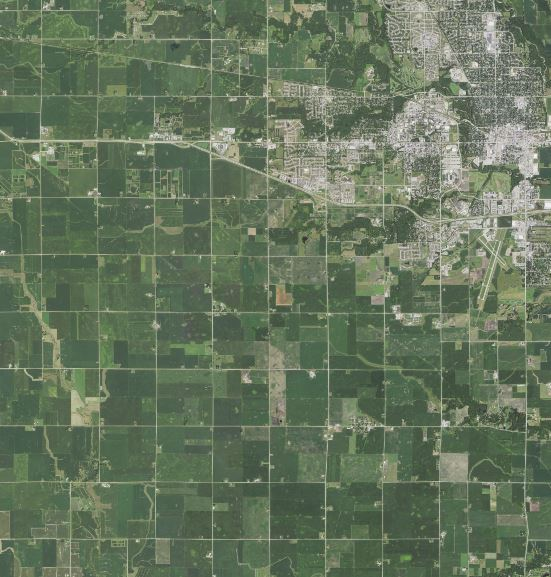

Historically, nearly 85% of Iowa was covered with lush, fast growing tallgrass prairie. Today, hardly 0.1% of that coveted prairie remains. With such an agriculture intensive landscape, any natural areas we can find or restore are extremely important. Our goal is to inventory all natural areas on ISU Research Farms in Boone and Story Counties. These locations are especially important as we strive to make them more available for future researchers and educators to study. Whether it be for research or teaching, physically visiting these sites will help them remain natural.
If no one appreciates these restoration projects or protected lands, it is easier for people to forget about them. Not only are these areas important for education, but they are also beneficial to wildlife, soil and water quality. These are all important issues in current day Iowa. Agricultural production, while important, has taken a toll on soil and water quality. In fact, utilizing some of the best soil in the world for feeding many is very crucial. I believe that we can manage these farms and watersheds in a more environmentally conscious manner. With Farm Bill conservation programs such as CRP and Prairie Strips available, we can easily begin to turn around our soil erosion problems and in turn water quality.
The following maps provide a visualization for some of these ISU Research Farm natural areas. I have gone through multiple years of aerial photographs to identify grasslands, forests, wetlands, and riparian buffers, to name a few. These areas were then visited and confirmed to be what they were digitized as or switched to actual land cover. This is also a project that I am conducting for the ISU Research Farms, so this provides me a platform to practice talking about it and showing results.
Hopefully, after learning about these natural areas and Iowa’s current environmental issues, I can spread awareness to people of different professions. This is something I have studied and worked with for around 2 years now, so I am very passionate.
This image represents the area where many of ISU’s Research Farms are located.